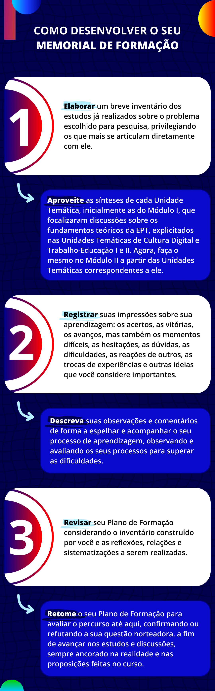

TCC II
Gestão na Educação Profissional e Tecnológica
Chegamos à última unidade temática do segundo módulo do curso, momento em que você revisitará os registros do seu Memorial e as anotações sobre suas reflexões em torno da questão-problema escolhida para investigação no módulo anterior, dando continuidade ao seu Plano de Formação. Essa questão-problema deverá corresponder a algum aspecto da sua realidade e às discussões desenvolvidas nas Unidades Temáticas estudadas nesse módulo.
Título: Reflexões em torno da sua questão-problema
Fonte: Prosa (2024a).
Além das anotações a partir de suas leituras, procure conversar com seu tutor e com seu professor formador sobre suas dúvidas e pesquisas envolvendo a temática escolhida, para, com isso, avançar na elaboração da sua compreensão sobre a realidade em que atua. O registro de suas leituras e discussões auxiliará na elaboração de possíveis proposições para o enfrentamento do desafio escolhido para estudo.
Logo, o Memorial é o instrumento fundamental para o desenvolvimento do seu Plano de Formação. Vamos retomar, a seguir, as orientações para sua elaboração, as quais já foram apresentadas na UT de TCC I.

Título: O que devo fazer em meu Memorial de Formação?
Fonte: Prosa (2024b).